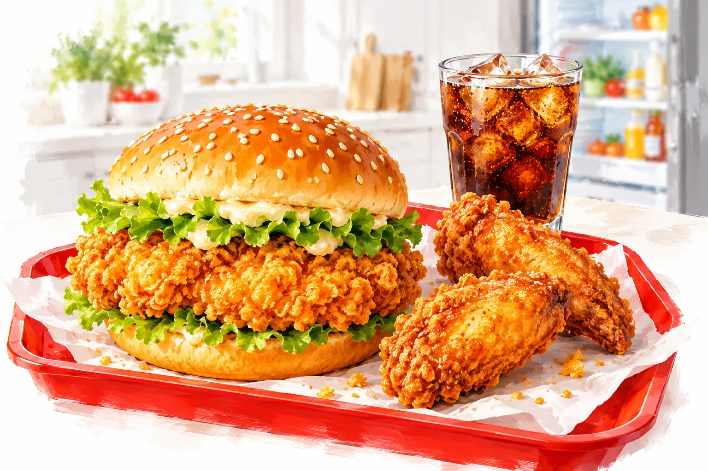

喝的？家里已有！历史核价体验 · 不是当前报价。2026-10-24 19:54，长沙某门店麦乐送；无可用券、不需要餐具、不新购会员。覆盖 23 种需求组合，完成 40 次整单核价。页面不会读取账号或下单。
01 / 想吃什么？可以多选
02 / 满足需求，看整单实付
想查自己的门店？复制这段需求
将需求发送给已连接麦当劳 MCP、安装本技能的助手。此网页本身不实时询价。
“可以便宜多少”是怎么比较的？
基准是所选食物各一份的整单单点实付，含配送及打包费。套餐必须覆盖这些食物；多出的鸡翅、薯条和饮料会明确列出。完全不要饮料时，含饮料套餐不进入结果。
这里只包含一次查询中的单点、四拼小食餐、精选四件套两种堡、麦乐鸡中套餐、板烧中套餐及补齐单点组合。没有穷举全菜单，不包含新购会员或第三方外卖优惠。无更低价时如实显示，不承诺一定有优惠。